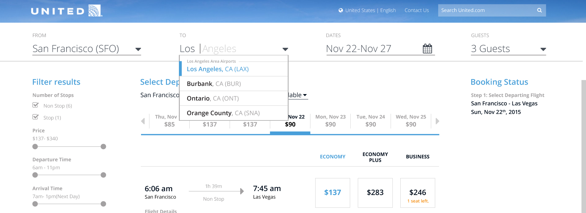
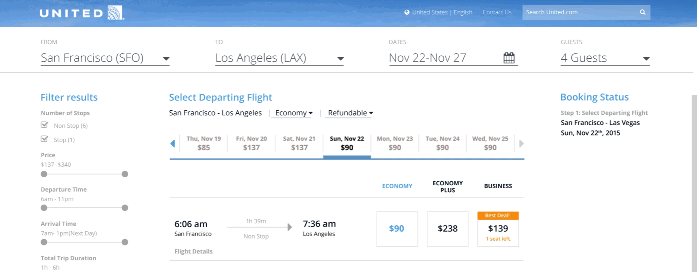
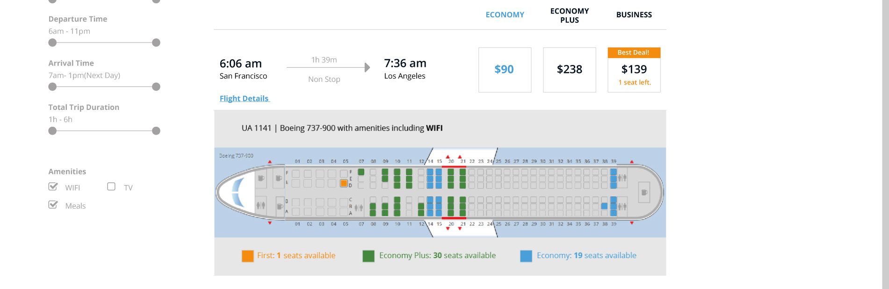
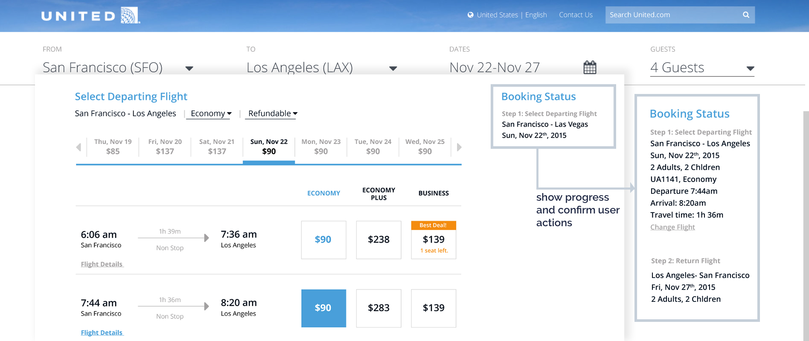

United.com
The challenge
Evaluate united.com and redesign one ill-designed feature.
The scope
1 semester, 3 designers.
My role: interface evaluation, interactive prototyping
This is a class project in which I evaluated and improved the United.com flight booking experience. As a group, we reported usability issues and proposed enhancements. Based on our usability evaluation report, the search result page was rated the most problematic. Therefore, for the second part of our project, we rethought the page layout, created and tested different design alternative, and came up with a more usable design.
Results
What's better than getting 100% in class projects?
What I learned
Interface evaluation
How to conduct contextual interviews with users
How to analyze functionalities and identify the problem space
Part 1: Interface Evaluation
User profiling
United Airlines have a huge customer base. It operates nine airline hubs, handling 13.4 million passengers in 2014 (United Corporate Fact Sheet, 2014). For the purpose of this report, we generalized its large customer base and created two personas: Mike, the casual traveller without membership, and Jen, the business traveller with membership.
Contextual inquiry
7 individuals were tested using the quantitative metrics. They were asked to book a flight from San Francisco to Los Angeles for 2 adults and 2 children under 5 years old using United.com, VirginAmerica.com and Priceline.com.
Interface Evaluation
United’s website is incredibly feature rich. The five main features highlighted on the homepage include book travel (Flight, Hotel, Car, Cruise Vacation), sign in to MileagePlus, check flight status, check-in, and manage tips were deeply examined, analyzed and reported.
See the evaluation report for more details!
Suggested Usability Enhancements
Guide users through the process and tell them what to do when errors occur. Shorter, more conversational messages. Improve information hierarchy and feature visibility. Present consistent information at all touch points. Provide positive affordances for clickable content. Clearly label all input fields and improve their nomenclature. Add utilitarian features like 'Save flight', view multiple day fares for all classes. Make the system smarter. Detect user’s location, search history, mile balance and use it to cross pollinate information across pages. Improve typography (especially leading) and iconography.
Key takeaways
Compare to the old version, the new homepage is cleaner and more task-oriented. The booking process has some good functionalities. However, after analyzing the booking process and its usability, we found a few issues that might make the website unusable. Here are some of the key takeaways:
Booking should not feel like a chore. Users should be able to correctly navigate through the website. There should be no information loss while moving from one step to another. The system should be transparent. Information presented to the user must be clear and consistent.
Part 2: Redesigning search result page
Goal based design
Hill: Users are able to plan their desired itinerary within 4 minutes of time
Based on the evaluation results, users struggled to find flights that are best suited their itinerary and preferences. Our design goal is to allow users to quickly sort through search results and find suitable fights. The goal can be further broken down into four sub-goals:
1. Users are able to modify search. 2. Users are able to view and filter lowest prices for adjoining dates. 3. Users are able to sort flight details using a filter. 4. Users will receive system confirmation of their actions.
Paper Prototyping
Three alternatives were designed and tested using paper prototypes.
A transparent booking process
Following user centred design principles, each design was repeatedly evaluated and iterated. This led to the development of an intuitive interface that's transparent, helpful and reliable. Issues identified in the evaluation report including visual mapping, ambiguous classification of travel class, complex information architecture and visually complex design were addressed. The following design decisions are worth highlighting:
1. The modifiable search fields are prominently displayed on top
Direct manipulation can add context to the action and reduce the number of required steps. Right now, if the user wants to modify search criteria, he has to look for small “modify search” button, click it, update the criteria, click “confirm” and wait for the page to reload. This new design eliminated extra steps. The search fields are prominently located on top. Clicking on a item will turn it into an editable field, and the page will refresh when changes are detected.
2. Lowest prices for adjoining dates are filterable
During user testing, participants mentioned that this lowest price slider is ensuring them they are getting the best price. We added a filter for the slider which will make it more usable. Now, the user can find prices for adjoining dates for different cabins and whether if it’s refundable.
3. Direct mapping of seat availability and travel class
The labeling and color coding for different cabins were very confusing. We designed a consistent color coding system for the three cabin classes: light blue for Economy, green for Economy Plus, orange for Business. We also changed the cabin class names to names that align with user’s mental model and easy to remember.
4. Confirming actions by providing adequate feedback throughout the process
Showing progress will set expectations for users. Informing users about the current state of the process is a good way of providing feedback. Also, showing users confirmation of their previous action helps them understand whether or not their past actions have been carried out correctly.
5. Clean and minimal design with a clear hierarchy
Good visual hierarchy can effectually direct or pause user’s attention, and improve general readability. With a clean design, users are able to skim through the full page top to bottom and locate the desire information faster.
The result
4 participants were tasked to complete the same tasks for the interactive prototype, all 4 participants completed the tasks successfully. Participant 2 mentioned that this design of United’s website was much more intuitive to use than the one she is used to. Participants were able to walk through the entire prototype in under 3 minutes.
What I learned
Knowing You Know Nothing is Everything
I signed up for this HCI class thinking this will be an easy class, I know the stuff! Three weeks into the semester, I realize that know nothing. I learned more in a month in grad school than 2 years working in the software industry.
1. Anybody can have an opinion about an interface, but only real human factor professionals can articulate usability problems based on the science behind it.
I'm not allow to say: this interface is good/bad/sexy/pretty/busy/chaotic. Instead, I have to say: this validated Norman's what heuristic principle in what way. I have to take myself and my likes/dislikes out of the picture because I'm only an ambassador of the science.
2. Technology change quickly, but humans don't.
Being able to understand humans, and shape the system to fit our behavioral pattern is what makes you good. After-all, we're all essentially, just humans.
Great designs are informed by research. For more information on UX research and usability testing for this project, take a look at my fellow design researcher Sahiba Johar's portfolio.